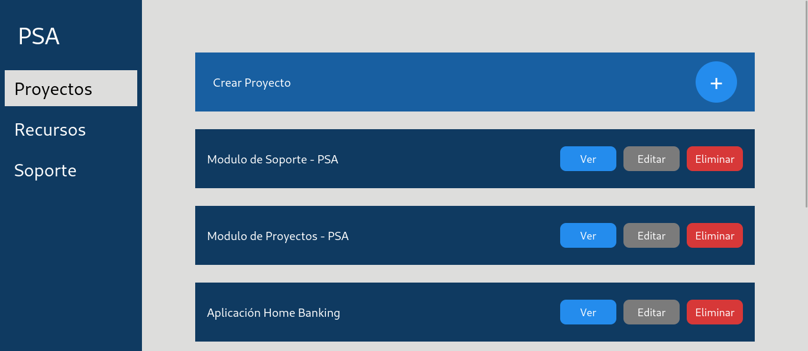
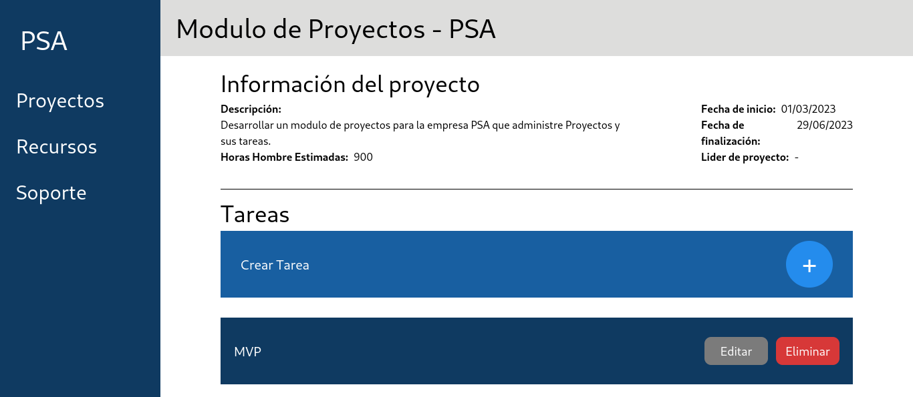
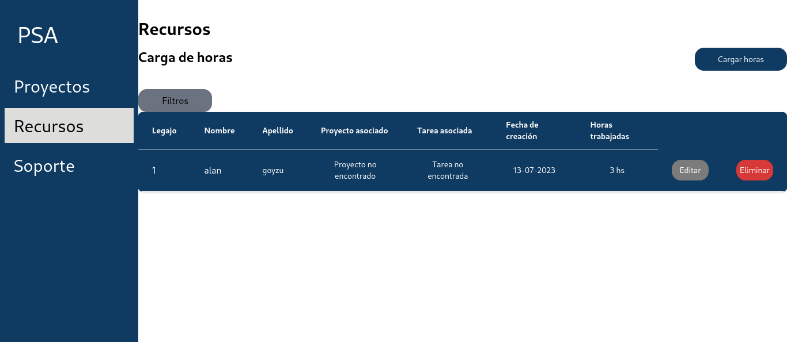
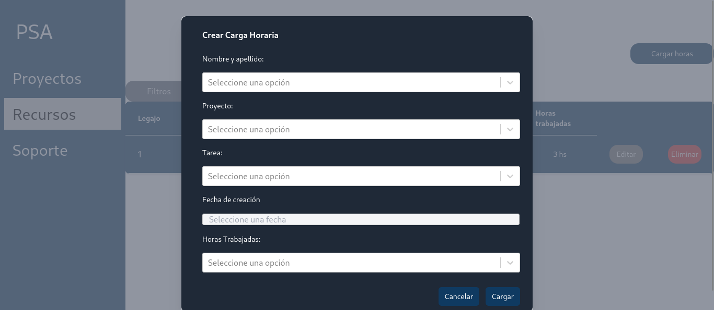
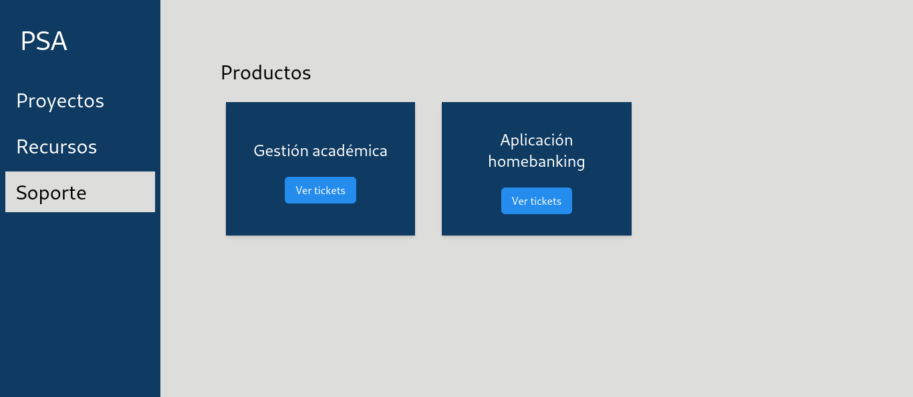
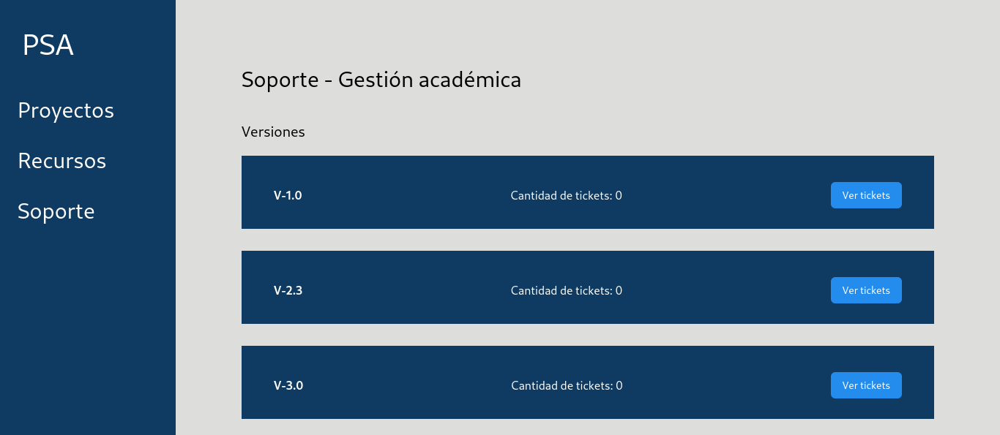
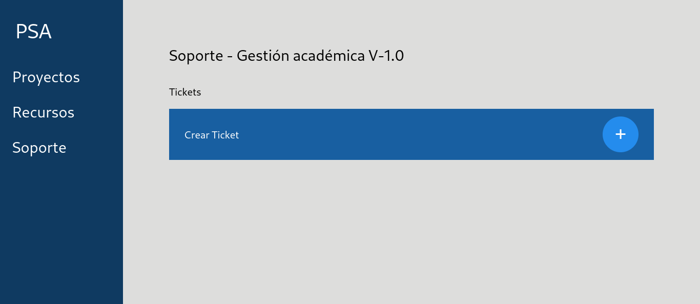
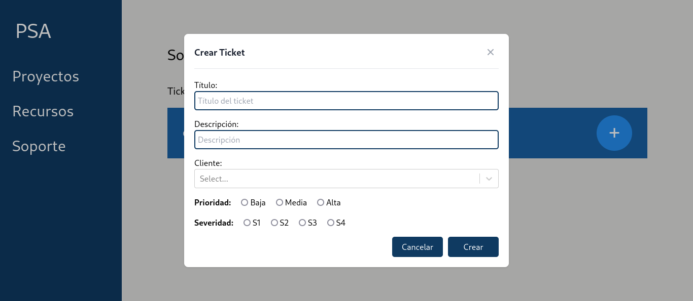
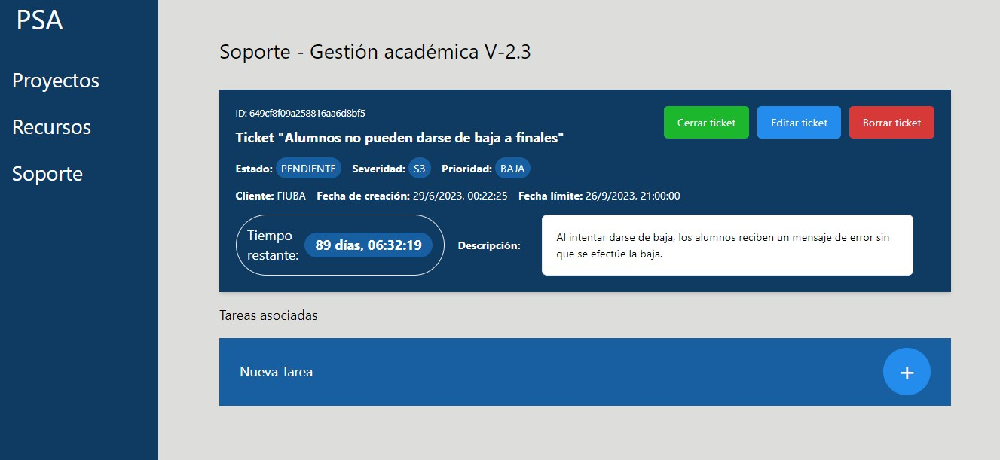

Contact:

This project was developed for the class "Métodos y Modelos de la Ingeniería del Software I" (Software Engineering's Methods
and Models I) over the span of 11 weeks working first in the backend with a team (5 people) and later combining
our work with the work of 2 teams that developed the other parts of the system.
Our team was in charge of the customer support area which included the creation and resolution of tickets. The tickets are grouped by product and
version. Also, each ticket has a priority and resolution time limit apart from being able to create and assign tasks to each ticket.
Another area is in charge of projects. This area makes it posible to create projects, add tasks to each and see the status of the tasks to be able to
make decisions. Lastly, there's a resources area, which is in charge of the administration of resources in projects. Currently, the term resources
is used for employees but it could be extended to machinery. This is the area where the employees could load their working hours.
As a whole, these areas combined make a complete projects management system, as it includes planning, customer support and accounting of
a project.
Being a project in which our professors acted as our client with a fictional company (PSA) it was crucial to show them a prototype
of the application so that we could catch mistakes and/ or misunderstandings before developing the system. For that reason, I made the prototype
on Figma to be able to show them a demo of our part of the system.
As we where simulating working with a client, we had to create documentation with the requirements from the meetings with said client and plan
how the system should work, for that, we created user stories.
At the moment of combining the backends and starting to develop the frontend, I made the view of the tasks, the form used to create said tasks
and I helped with the styles of some elements to enhance the look of them.
In this section, I will focus on the functioning of the customer support area. To begin, it is necessary to have products and their versions. Then, when you want to create a ticket, you enter through the product and version, and create the ticket using a form where information such as title, description, priority, and severity are requested. Once a ticket exists, you can access it to view its more detailed information, and you can also create a task associated with that ticket. This task can also be linked to a project, so it can be viewed in the project section. The task can be assigned to an employee (resource), and then, when the employee completes it, they can log the hours spent on the task, mark the task as completed, and close the ticket.
To create the prototypes, Figma was used, and the final project was developed in Next.JS. We published it using Render to have a link to the functional project. Additionally, it internally interacts with a REST API that we built from scratch.
Overview of projects
View of a Specific Project
Overview of resources
View of the form for logging hours
Overview of projects
Overview of versions of a product
Overview of tickets
View of the form to create a ticket
View of a specific ticket
The project is located in the following repository: Go to the code.
Additionally, for more information about the backend, you can view the REST API.